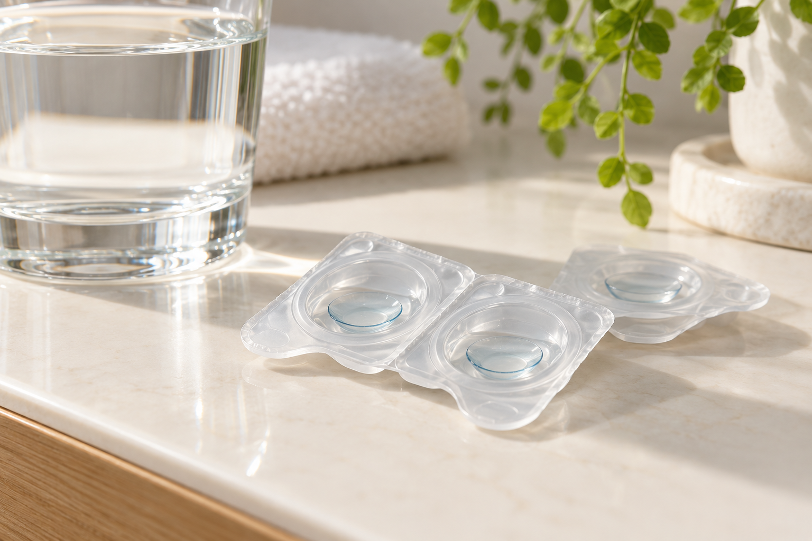

Jednodniowe
Świeża para na każdy dzień noszenia.
Poznaj możliwości →Soczewki kontaktowe w Lublinie
Poznaj soczewki kontaktowe dopasowane do Twojego wzroku i codziennych potrzeb.

Świeża para na każdy dzień noszenia.
Poznaj możliwości →Wymagają pielęgnacji i wymiany według zaleceń.
Poznaj możliwości →◉ Dostępne rozwiązania dobieramy do potrzeb: sferyczne, toryczne i multifokalne.
Pierwsze soczewki?
Pielęgnacja i codzienność
Zawsze myj i dokładnie osusz dłonie przed kontaktem z soczewkami.
Unikaj kontaktu soczewek z wodą, na przykład podczas kąpieli i pływania.
Stosuj się do zaleceń dotyczących wymiany soczewek.
Używaj odpowiednich płynów i akcesoriów.
Dobór i wsparcie
Porozmawiajmy o pracy, aktywności i tym, jak często chcesz nosić soczewki.
Umów dobór soczewekNie zawsze. Najpierw trzeba sprawdzić, czy soczewki będą dla Ciebie odpowiednie.
Tak, wiele osób nosi na zmianę okulary i soczewki.
Zapytaj o dostępny termin.
Poznaj także

Sprawdzimy, jak widzisz, i dobierzemy korekcję.
Ochrona oczu, która dobrze wygląda.
Odwiedź nasz salon w Lublinie.